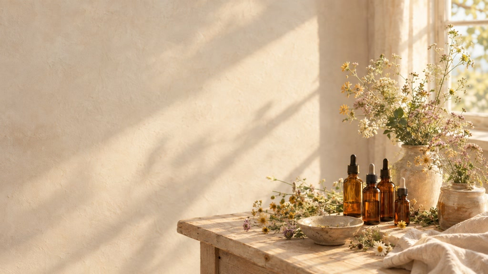
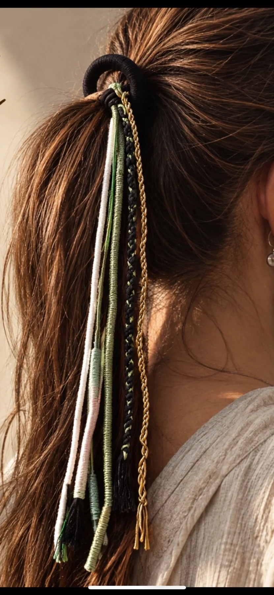

Terapia Floral Evolutiva
Transformamos el proceso terapéutico en tu viaje de autoconocimiento.
Evolutiva
Transformamos el proceso terapéutico en tu viaje de autoconocimiento.

Transformamos el proceso terapéutico en tu viaje de autoconocimiento.
Colores del Alma está tomando forma.
Muy pronto.
Accesorio artesanal tejido a mano para llevar en el pelo.
